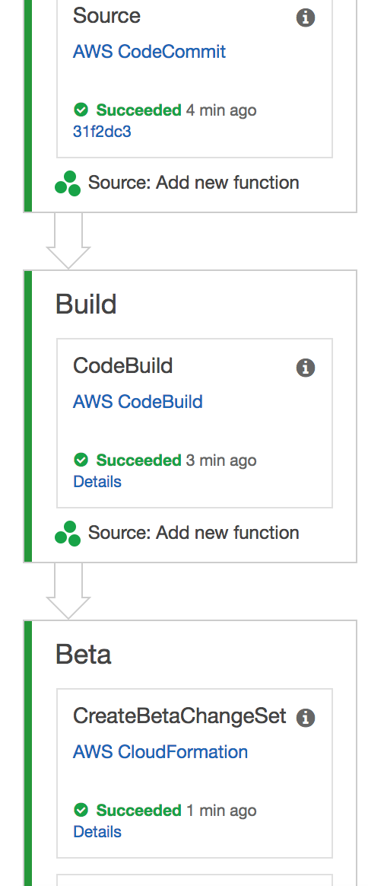

Section 2: Working with AWS CodePipeline¶
In this section, we’ll create a CodePipeline for our sample chalice app.
Creating a pipeline¶
AWS Chalice provides a command for generating a starter template. This template is managed through an AWS CloudFormation stack.
Instructions¶
Create a
release/directory. We’ll place CD related files in this directory:$ mkdir release/
Generate a CloudFormation template for our starter CD pipeline:
$ chalice generate-pipeline release/pipeline.json
Deploy this template using the AWS CLI:
$ aws cloudformation deploy --stack-name chalice-pipeline-stack \ --template-file release/pipeline.json \ --capabilities CAPABILITY_IAM
This last command may take up a few minutes to deploy.
Configuring git¶
Up to this point, we have not been using any source control to track our changes to our sample app. We’re now going to create and configure a git repo along with an AWS CodeCommit remote. If you haven’t set up git, you can follow the instructions in the Setting up git section.
Instructions¶
Initialize your sample app as a git repository:
$ git init . $ cp ../chalice-workshop/code/todo-app/part2/02-pipeline/.gitignore .
Commit your existing files:
$ git add -A . $ git commit -m "Initial commit"
Query the CloudFormation stack you created in the previous step for the value of the remote repository:
$ aws cloudformation describe-stacks \ --stack-name chalice-pipeline-stack \ --query 'Stacks[0].Outputs' [ ... { "OutputKey": "SourceRepoURL", "OutputValue": "https://git-codecommit.us-west-2.amazonaws.com/v1/repos/mytodo" }, ... ]Copy the value for the
SourceRepoURLand configure a new git remote namedcodecommit. Be sure to use your value of theSourceRepoURL:$ git remote add codecommit https://git-codecommit.us-west-2.amazonaws.com/v1/repos/mytodo
Configure the CodeCommit credential helper. Append these lines to the end of your
.git/configfile:[credential] helper = helper = !aws codecommit credential-helper $@ UseHttpPath = true
Verification¶
Verify you have a
codecommitremote:$ git remote -v codecommit https://git-codecommit.us-west-2.amazonaws.com/v1/repos/mytodo (fetch) codecommit https://git-codecommit.us-west-2.amazonaws.com/v1/repos/mytodo (push)
Verify the credential helper is installed correctly. Mac users may see an
osxkeychainentry as the first line of output. This is expected, you just need to verify the last two lines match the output below:$ git config -l | grep helper credential.helper=osxkeychain credential.helper= credential.helper=!aws codecommit credential-helper $@
Verify you can fetch from the
codecommitremote:$ git fetch codecommit $ echo $? 0
Pushing your changes to AWS CodeCommit¶
Now we have our pipeline and git remote configured, anytime we push
changes to our codecommit remote, our pipeline will automatically
deploy our app.
Instructions¶
Push your changes to the
codecommitremote:$ git push codecommit master Counting objects: 23, done. Delta compression using up to 4 threads. Compressing objects: 100% (18/18), done. Writing objects: 100% (23/23), 9.82 KiB | 3.27 MiB/s, done. Total 23 (delta 2), reused 0 (delta 0) To https://git-codecommit.us-west-2.amazonaws.com/v1/repos/mytodo * [new branch] master -> master
Verification¶
The best way to verify the pipeline is working as expected is to view the pipeline in the console:
Log in to the AWS Console at https://console.aws.amazon.com/console/home
Go to the CodePipeline page.
Click on the “mytodoPipeline” pipeline.
{kind=link}
You should see a “Source”, “Build”, and “Beta” stage.
It can take a few minutes after pushing a change before the pipeline starts. If your pipeline has not started yet, wait a few minutes and refresh the page. Once the pipeline starts, it will take about 10 minutes for the intial deploy.
{kind=link}
Wait until the stages have completed and all the stages are green.
{kind=link}
Place your mouse over the “i” icon. Note the value of the Stack name. It should be something like
mytodoBetaStack.
{kind=link}
Query for the stack output of
EndpointURLusing the AWS CLI. This is the same step we performed in the previous section:$ aws cloudformation describe-stacks --stack-name mytodoBetaStack \ --query 'Stacks[0].Outputs' [ { "OutputKey": "APIHandlerArn", "OutputValue": "arn:aws:lambda:us-west-2:123:function:..." }, { "OutputKey": "APIHandlerName", "OutputValue": "..." }, { "OutputKey": "RestAPIId", "OutputValue": "abcd" }, { "OutputKey": "EndpointURL", "OutputValue": "https://your-chalice-url/api/" } ]Use the value for
EndpointURLto test your API by creating a new Todo item:$ echo '{"description": "My third Todo", "metadata": {}}' | \ http POST https://your-chalice-url/api/todos HTTP/1.1 200 OK Content-Length: 36 Content-Type: application/json abcdefg-abcdefgVerify you can retrieve this item:
$ http https://your-chalice-url/todos/abcdefg-abcdefg HTTP/1.1 200 OK Content-Length: 140 Content-Type: application/json { "description": "My third Todo", "metadata": {}, "state": "unstarted", "uid": "abcdefg-abcdefg", "username": "default" }
Deploying an update¶
Now we’ll make a change to our app and commit/push our change to CodeCommit. Our change will automatically be deployed.
Instructions¶
At the bottom of your
app.pyfile, add a new test route:@app.route('/test-pipeline') def test_pipeline(): return {'pipeline': 'route'}
Commit and push your changes:
$ git add app.py $ git commit -m "Add test view" $ git push codecommit master Counting objects: 3, done. Delta compression using up to 4 threads. Compressing objects: 100% (3/3), done. Writing objects: 100% (3/3), 357 bytes | 357.00 KiB/s, done. Total 3 (delta 2), reused 0 (delta 0) To https://git-codecommit.us-west-2.amazonaws.com/v1/repos/mytodo 4ded202..31f2dc3 master -> master
Verification¶
Go back to the AWS Console page for your CodePipeline named “mytodoPipeline”.
Refresh the page. You should see the pipeline starting again. If you’re not seeing any changes, you may need to wait a few minutes and refresh.
Wait for the pipeline to finish deploying.
Once it’s finished verify the new test route is available. Use the same
EndpointURLfrom the previous step:$ http https://your-chalice-url/api/test-pipeline HTTP/1.1 200 OK Connection: keep-alive Content-Length: 21 Content-Type: application/json ... { "pipeline": "route" }
Extract the buildspec to a file¶
The instructions for how CodeBuild should package our app
lives in the release/pipeline.json CloudFormation template.
CodeBuild also supports loading the build instructions from
a buildspec.yml file at the top level directory of your app.
In this step we’re going to extract out the build spec from
the inline definition of the release/pipeline.json into a
buildspec.yml file. This will allow us to modify how CodeBuild
should build our app without having to redeploy our pipeline stack.
Instructions¶
Remove the
BuildSpeckey from yourrelease/pipeline.jsonfile. Your existing template has this section:"Resources": { "AppPackageBuild": { "Type": "AWS::CodeBuild::Project", "Source": { "BuildSpec": " ... long string here ...", "Type": "CODEPIPELINE" } } ...
And after removing the
BuildSpeckey it should look like this:"Resources": { "AppPackageBuild": { "Type": "AWS::CodeBuild::Project", "Source": { "Type": "CODEPIPELINE" } } ...
Redeploying your pipeline stack using the AWS CLI:
$ aws cloudformation deploy --stack-name chalice-pipeline-stack \ --template-file release/pipeline.json \ --capabilities CAPABILITY_IAMAt the top level directory of your sample app, create a new file named
buildspec.ymlwith these contents:version: 0.1 phases: install: commands: - sudo pip install --upgrade awscli - aws --version - sudo pip install chalice - sudo pip install -r requirements.txt - chalice package /tmp/packaged - aws cloudformation package --template-file /tmp/packaged/sam.json --s3-bucket ${APP_S3_BUCKET} --output-template-file transformed.yaml artifacts: type: zip files: - transformed.yamlCommit the
buildspec.ymlfile and push your changes to CodeCommit:$ git add buildspec.yml $ git commit -m "Adding buildspec.yml" $ git push codecommit master
Verification¶
Go to the CodePipeline page in the console.
Wait for the pipeline to deploy your latest changes. Keep in mind that there should be no functional changes, we just want to verify that CodeBuild was able to load the
buildspec.ymlfile.
Run unit tests¶
Now we’re going to modify our buildspec.yml file to run our unit
tests. If the tests fail our application won’t deploy to our Beta stage.
Instructions¶
Create a new
build.shscript with these contents:#!/bin/bash pip install --upgrade awscli aws --version pip install virtualenv virtualenv /tmp/venv . /tmp/venv/bin/activate pip install -r requirements.txt pip install -r requirements-test.txt pip install chalice export PYTHONPATH=. py.test tests/ || exit 1 chalice package /tmp/packaged aws cloudformation package --template-file /tmp/packaged/sam.json --s3-bucket "${APP_S3_BUCKET}" --output-template-file transformed.yaml
Make the script executable:
$ chmod +x ./build.sh
Update your
buildspec.ymlto call this build script:version: 0.1 phases: install: commands: - sudo -E ./build.sh artifacts: type: zip files: - transformed.yaml
Commit your changes and push them to codecommit:
$ git add build.sh buildspec.yml $ git commit -m "Run unit tests"
Verification¶
Refresh your pipeline in the AWS console.
Verify the pipeline successfully completes.
Add a failing test¶
Now we’ll add a failing unit test and verify that our application does not deploy.
Instructions¶
Add a failing test to the end of the
tests/test_db.pyfile:def test_fail(): assert 0 == 1
Commit and push your changes:
$ git add tests/test_db.py $ git commit -m "Add failing test" $ git push codecommit master
Verification¶
Refresh your pipeline in the AWS console.
Verify that the CodeBuild stage fails.